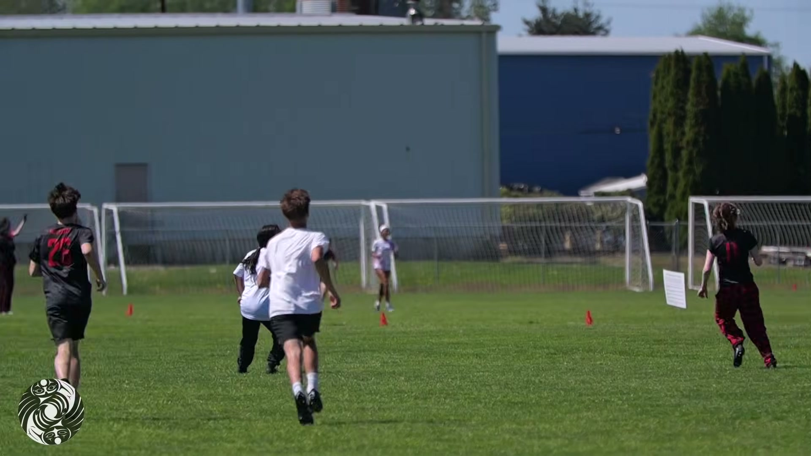
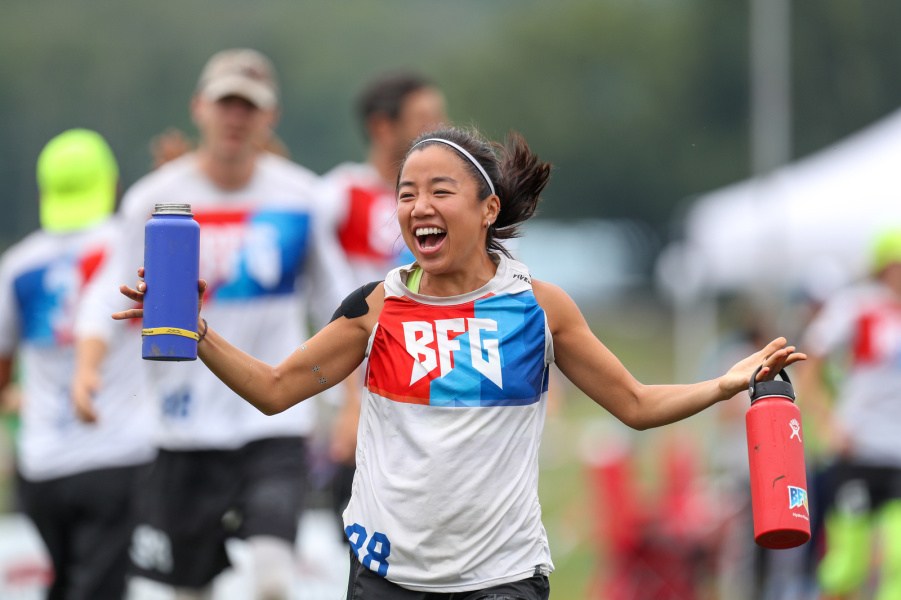
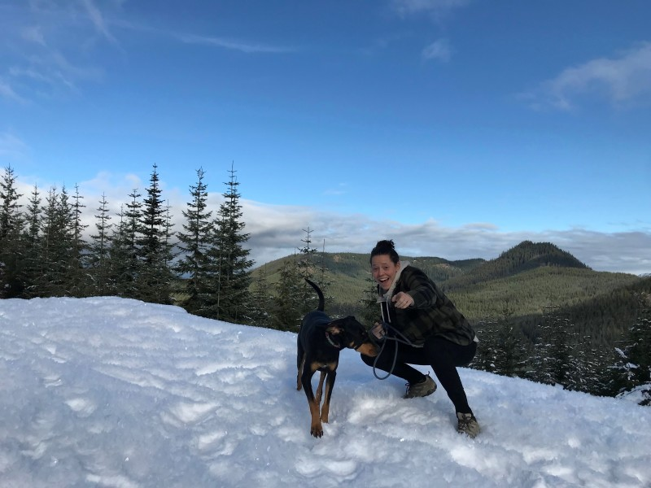
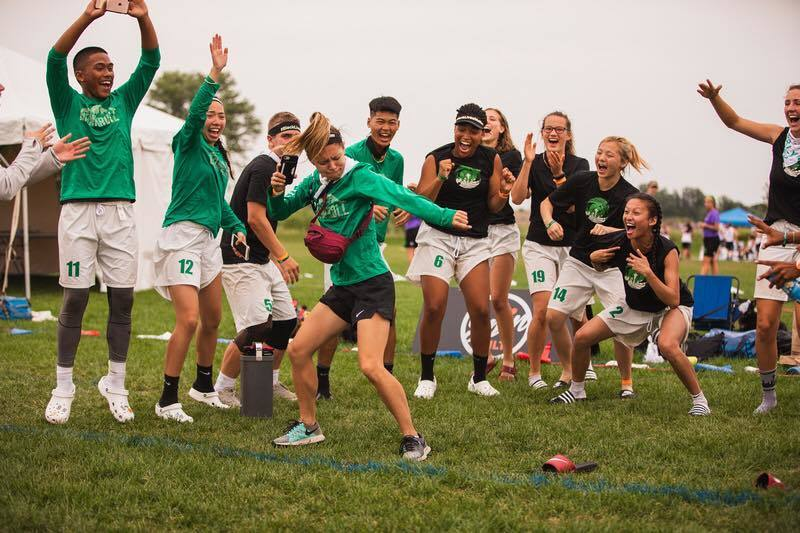

DiscNW website redesign · Design direction 15 of 22 · Grounded system
The Handbook
Ultimate has no referees — the whole sport runs on a shared handbook and the good faith to apply it. So the site becomes that text: the community’s well-set reference shelf, where every answer has a number, and the parent at 9 p.m. and the coach mid-practice both find their clause in seconds. Calm, numbered, authoritative, kind.
Registered mark of the Disc Northwest community · est. 1995
Numbered·Calm·Authoritative·Kind·Look-it-up fast

Plate 1 — Spring Reign, Burlington. The world’s largest mixed youth ultimate tournament: a full weekend of games, zero referees, every call made on the field.
§ 02 · The idea
A sport that runs on a text deserves a site that reads like one.
Every other sport outsources its rules to a referee. Ultimate hands them to the players: on every DiscNW field, at every level, all 10,000+ make and resolve their own calls. A community that already governs itself through a shared text and mutual respect has the best possible excuse to become one — so The Handbook turns discnw.org into the community’s reference shelf: numbered clauses, marginalia, cross-references, set with the restraint of a fine manual. Weight and space do the work; there is almost nothing on these pages that isn’t an answer.
The numbering is not decoration — it is the information architecture. Chapter 1 is what ultimate is. Chapter 2 is how seasons work. Chapter 3 is what it costs. Chapter 4 is spirit and self-officiating. A parent can be told “start at § 1.4” in a two-line email; a new coach can bookmark § 4.2 and open it mid-practice; staff can answer half the inbox with a clause number. This is the direction for people who arrive with a question and a deadline — which, at a league that registers thousands of households a season, is nearly everyone.
§ 03 · Palette
Paper, ink, one regulation color, one highlighter.
A bookish palette that stays out of photography’s way. Oxblood is the single authority color for clause numbers, links, and actions — used like a rubber stamp, never as wallpaper. The highlighter belongs to cross-references alone.
Vellum
#FAF6EC
The page. A warm paper white that reads printed, not backlit — everything sits on it.
Ink
#221E18
Text and the appendix bands — near-black with a little umber, like set type.
Regulation Oxblood
#77202C
The authority color: clause numbers, links, primary actions. One stamp, used sparingly.
Highlighter
#FFE45C
The cross-reference swipe on paper; the small accent ink of the appendix. Never body text, never a surface.
Pencil
#665E51
Marginalia, plate captions, secondary text — the annotator’s grey, always AA on vellum.
Buckram
#EDE4D2
Book-cloth tan for contents bands and asides — separation by surface, not by hairline.
Annotation — The Handbook is hairline-free by rule: panels, indents, and margins do the separating that borders would. The only dotted line in the system is the index leader, which is information, not decoration.
§ 04 · Typography
A book face and a documentation face.
Spirit & Story uses a serif to be a magazine; The Handbook uses one to be a manual — same shelf, different book. Literata was commissioned as a long-form reading face, with a full optical-size axis that stays finely drawn at display and sturdy at footnote. IBM Plex Mono, from the home of the technical manual, sets every clause number, cross-reference, and status line, so “this is a lookup” is always visible at a glance.
Text & display · the clauses
Literata
A contemporary book serif with real credentials — designed for long-form reading, variable optical sizes 7–72, true italics. Weights 400–700; display at 500, never bolder, so authority stays calm.
AaBbGgQqRr 0123456789 — huck, layout, pull
Numbers & apparatus · the references
IBM Plex Mono
The typeface of technical documentation. Clause numbers, cross-refs, captions, deadlines, field-status lines — anything you look up rather than read. Weights 400–600.
§ 2.3 · § 3.1 · (206) 781-5840 · 0123456789
Fees start at $33. The season is the same at every tier.
§ 3.1 — the sliding scale · pick the tier that fits your household, no questions asked
Seattle gets roughly 37 inches of rain a year, less than New York, but spreads it across about 150 days. The handbook’s weather clause is therefore short: drizzle rarely cancels ultimate, wind changes games more than rain ever does, and when in doubt the rainout hotline will tell you the rest (206) 781-5840 → § 2.8.
Chapter 2 — How seasons work
Display · Literata 500, opsz 72 · 56–96px
The year at a glance
H2 · Literata 600 · 34/40
Fall middle school & high school leagues
H3 · Literata 600 · 22/29
Registration opens about two months before first pull; schedules post here first.
Body · Literata 400 · 18/30
§ 2.3 · cross-ref → § 3.1
Clause apparatus · Plex Mono 500 · 15/22
Plate 1 · Spring Reign, Burlington
Caption · Plex Mono 600 caps · 12/18
§ 05 · Signature element
The clause
One device carries the whole direction: a number in Plex Mono, a statement in Literata, a cross-reference wearing its highlighter. The numbers aren’t styling — they are the site map, stable enough to put in an email, short enough to say across a field.
§ 1.1
Ultimate is self-officiated. Players make every call. Respect is the rulebook.
The number
§ 2.3
Plex Mono, oxblood, inked in left to right. Chapter, then clause — real architecture, not ornament.
The clause
Fall school leagues begin the week after Labor Day.
Literata, one answer per clause. If it takes three paragraphs, it’s three clauses.
3.xWhat it coststhe sliding scale from $33 · § 3.4, nobody turned away
4.xSpirit & self-officiatingmaking a call, resolving one, the spirit circle
Hero answers·Page headers·Event cards·Confirmation emails·Said out loud on sidelines
Motion rule — “the page turns”: clause numbers ink in left to right, sections settle like laid pages on one slow curve, and cross-references draw their highlighter on hover. Nothing else moves. This is the stillest direction in the kit; precision is the flourish.
§ 06 · Homepage
discnw.org as a reference desk.
Not a poster, not a feed — a desk with a librarian behind it. One question box, three quick answers, the four chapters, and the current index. A parent can land, type “cost,” and be reading § 3.1 before the kettle boils.
Plate 2 — Spring Reign, Burlington. Photography is sparing in this direction: one strong plate per chapter opening, full color, captioned here and never typed over.
Component note — the question box is the hero because it’s what visitors actually came to do; the three quick answers are staff-editable and rotate with the season. The chapters row is the numbering doing navigation work, and the index list gives “registering now” the dignity of a back-of-book index: name, leader, clause, deadline.
§ 07 · Audience pathways
Three front doors, each opening to a chapter.
Players, coaches, parents — every door is an instruction, not a mood: where to start, what to read, what to do next. Typographic by design; the plates stay reserved for chapter openings.
§ 2
Players
Pick a season. We’ll handle the roster.
Hat leagues, team leagues, a beach weekend at Sea Plastic, your twentieth Potlatch — chapter 2 lists every season in order, each clause ending in a register link. Individual signup means you never need to bring a team.
§ 4
Coaches & volunteers
Read § 4 first. The Collective handles the rest.
Spirit and self-officiating are the curriculum — everything else is logistics the DiscNW Coaching Collective has already written down: practice plans, season checklists, and a bench of coaches to lean on.
§ 1.4
Parents & families
The 9 p.m. answers, four clauses long.
What practice looks like, what to pack, what a game feels like from a camp chair, and why there are no referees. Written for the night before the first practice, findable in one search.
§ 08 · Storytelling
Appendix A — the community record
Every direction needs a story engine. The Handbook’s is the record: short community testimonies filed like clauses, each with a number, a place, and a season, so the archive grows into evidence that the system in chapters 1–4 actually works.
Record 4.1-a · filed October · fall middle school leagues
“I showed up ready to argue with a referee. There isn’t one. My daughter fouled a girl, called it on herself, and the two of them sorted it out in ten seconds while I sat back down in my camp chair. Six years of youth soccer sidelines and I’d never seen anything like it.”
Plate 3 — Spring Reign, Burlington. The spirit tunnel after the middle school final: § 4.5, the clause every game ends on.
¹10,000+
players a year make their own calls on DiscNW fields — no referees at any level. § 4.1
²1995
founded at Potlatch — this handbook has been community-written for three decades. § 1.2
³$33
where the sliding scale starts, no questions asked — and nobody is turned away. § 3.4
Component note — records are 100–200 words, community-submitted through a story form and filed under the clause they prove. Staff-light by design: the numbering does the curating.
Colophon — who keeps the handbook current
DiscNW board & staff — the people behind the record and the reference desk.
Erin Armstrong

Lili Gu

Sarah Titcomb

Taylor Kanemori
Joe Bisignano
Matt Stenovec
§ 09 · Working parts
The parts that answer and register.
Registration is the site’s day job. Oxblood means “this does something”; mono means “this is a fact you can act on.” Everything else keeps to the page.
Keyboard focus draws a 3px oxblood ring (highlighter on ink grounds). The label roll and the highlighter draw are pointer refinements; touch and reduced motion get the plain, complete control.
Event card — an entry, not an ad
§ 2.3
YouthSchool-year leagueOpens early Aug
Fall Middle School Leagues
Sep – Nov · weekday afternoons · fields across Seattle & the Eastside
Team and school-based play for grades 6–8, every game self-officiated and every season ending in a spirit circle. New players welcome — most of the league was new once.
Fees on the sliding scale from $33 → § 3.1 · nobody turned away → § 3.4
Rosters lock Sep 18
Look something up
§ 10 · Voice & tone
How The Handbook sounds.
A good reference librarian: precise, unhurried, quietly warm. It gives the number first and the reassurance in the same breath — and it never makes you feel late for asking.
Hero headline
Every answer has a number.
Registration confirmation
You’re registered — § 2.3, Fall Middle School Leagues. First games the week after Labor Day; schedules post in late August. Packing list at § 1.6: cleats, layers, water. Drizzle doesn’t cancel practice — that’s § 2.8.
To a nervous first-time parent
Start at § 1.4 — four short clauses written for you: what practice looks like, what to pack, what a game feels like from a camp chair, and why there are no referees. That last one is § 4.1, and it’s the best thing about this sport.